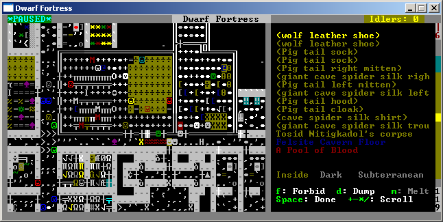
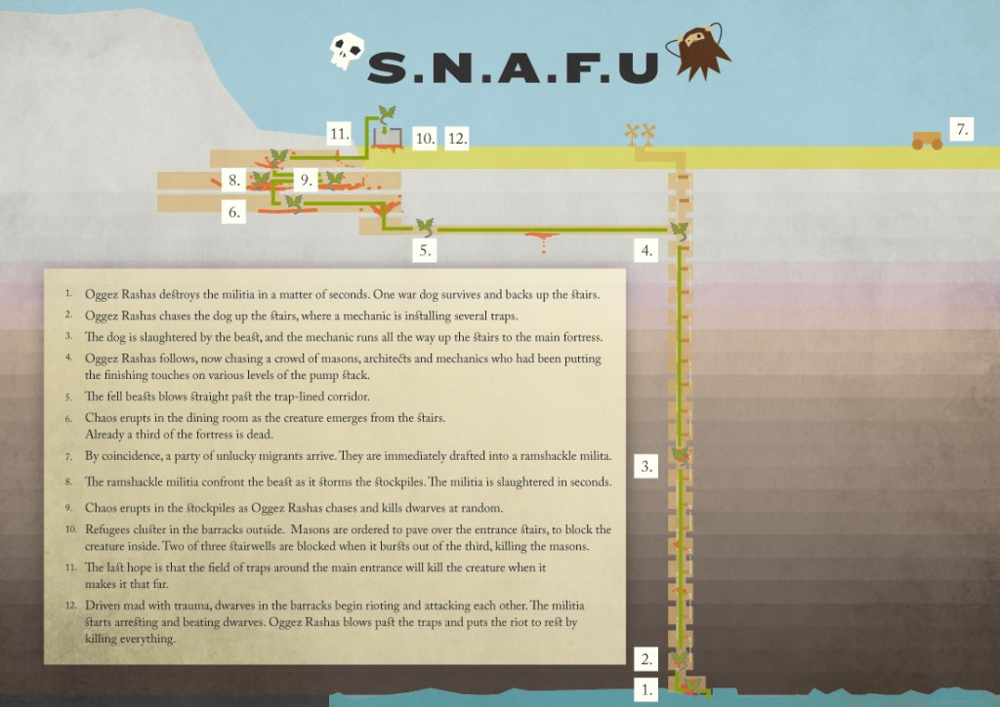

This is a repost of my interview with Tarn Adams, creator of Dwarf Fortress, a quirky and absurdly complex game that inspires enormous devotion among its fans–one of the most interesting examples of which is Matul Remrit, a collaboration between Kevin Snow, George Kavallines and Eidolon Orpheus which uses the generated culture of Dwarf Fortress as the inspiration for a starkly beautiful tale that strives to describe an alien culture developed procedurally based on the designs of Adams.
The study of video games, and, more frequently though still rare, board games and pen-and-paper role-playing games, has grown in legitimacy and scope this last decade. I’ve always been interested in the computer game as a medium for analyzing and expressing humanities knowledge, with the way that it packages knowledge, abstracts knowledge and gives the user multiple interfaces and scales with which to interact with that knowledge. As a result I tend to be drawn to games that are less visceral than the current crop of AAA action spectaculars. One of those games is Dwarf Fortress, a fantasy world simulator that looks something like this:

It’s not exactly God of War 3 in the graphics department, but then neither was Notes From the Underground. Dwarf Fortress is at its core a management game, like SimCity or Dungeon Keeper, but instead of managing the faceless proletariat to build a creepy utopian supercity, you’re trying to convince a steadily increasing mob of short, drunk humanoids to dig deep into the earth, smelt ore, create treasure and, occasionally, get murdered by elephants.

The tragic tale of Bronze Murder, one of the many examples of lovelingly illustrated and emotive ephemera that surrounds the Dwarf Fortress community. Players often elaborate upon their games with narrative storytelling, communal interaction as well as static and dynamic imagery.
But there are enough weird storylines in games that this shouldn’t surprise anyone. After all, doesn’t the Terminator show up at the end of Mass Effect? What’s intriguing about Dwarf Fortress is that the gameplay is designed to be wholly emergent. There are still scripted events within the game, but the extensive roadmap put together by developer Tarn Adams describes a finished game that contains not only emergent gameplay but emergent narrative and procedural culture. Everyone who has played Grand Theft Auto knows the joy of a sandbox game, but they also know that if they want the story to continue, that they need to re-engage with the linear elements of the gameplay. In Dwarf Fortress there is no linear storyline, there is simply a randomly generated world filled with generated fantasy cultures and mythical creatures (also randomly generated, so that you can end up with a ferocious, giant lemur with horns, wings and poison breath). These cultures and creatures then interact with each other for a set period of time, typically a thousand years, to establish the history of the world you’re playing on. The current histories, which can be browsed in “Legends” mode, are rather bloody and simplistic, but you do end up with occasionally heroic story or strangely compelling emergent detail.
Dwarf Fortress is only 30% finished and isn’t being developed by a major entertainment software company, and yet it’s surprisingly popular. The game itself has served as inspiration for AARs and creative interpretations of game events as well as being used to create simple computers within the mechanical and physical simulation itself. Given my interest in the game and its many elements that straddle the various aspects of the Digital Humanities, I decided to ask its developer a few questions less along the lines of gameplay and more about the development of emergent processes, narrative and community that surrounds a project like this.
Can you give us a brief sketch of your academic background and what drew you to designing and writing games about fantasy worlds?
The first iteration of our fantasy game was written when I was in sixth grade, so it’s kind of difficult to trace inspiration there… books, movies, some pen and paper RPGs, other computer games, etc. Just the stuff I was into as a kid. My brother and I kept adding details to the game, and the version of the game I was working on in high school had a persistent world map and tribes of creatures and towns that were kept around from game to game, within a given world. We always preferred games that were replayable (as a practical matter as much as anything, since we could only buy so many games, and if you are writing your own games at home and are the only ones playing them, keeping yourself surprised is very important) and the evolution of our fantasy games into world simulation was a natural outgrowth of that.
Regarding my academic background, I’ve always been good at math and followed a sort of path of least resistance, starting at my mathematics degree from the University of Washington through to my Stanford Ph.D. and into my postdoc at Texas A&M. At that point I had to make a decision between games and math, since I wasn’t talented enough to do those two things at once professionally and be responsible about it. In any case, all the practice at mathematics has helped with game writing, since there are similar skills that come up with algorithms and with spatial considerations.
Can you describe what gameplay typically involves with Dwarf Fortress as it currently exists and the type of gameplay you’re working toward?
First you generate a world. Once you’ve got your parameters selected, you watch the map get created and then you see the history march on for a bit. After you have a world, you can start your game (or you can make another world if you want; you can have several sitting around). Dwarf Fortress is right now divided between “Fortress Mode”, “Adventure Mode” and “Legends Mode”.
Fortress Mode is the bulk of the game, and in that mode you guide a group of dwarven settlers as they carve their mines into whatever spot of the world map you’ve selected. They face adversity from within the earth and from the outside world, and you also have to handle food, water, living arrangements, healthcare, and so on. Lots of objects need to be made, both to further work and as treasures as ends in themselves or for trade, and you handle the supply chain and assign jobs. The dwarves operate with a bit of autonomy, but they don’t take a lot of initiative, and you tell them explicitly what tasks they are allowed to perform for the most part. Adventure Mode is an incomplete RPG, and in Legends Mode you can look over the history of the world that was created, including the contributions from your Fortress and Adventure Mode games.
The idea now is to expand what we’ve got — especially to get fortresses interacting more with the world and to get adventure mode standing on its own as a game. Ideally you’d be able to play in more roles (a god, a human town, a group of bandits, a dragon, etc.), but that is a distant goal.
You have a game that seems firmly planted in the Tolkien style of high fantasy, and yet it contains code for tracking nervous tissue damage, the physics of weapon strikes, geologic processes for creating worlds, different geological layers of stone or soil and even simple genetics. However, there are no languages, no writing, musical instruments but only as goods for trade, et cetera. There’s a well-described roadmap for Dwarf Fortress that includes these things, so what determined your priorities in implementing features? How does the proper simulation of the production of nickel silver or steel relate to fantasy storytelling?
Ha ha, the production of nickel silver didn’t come out of the desire to tell fantasy stories so much as it came out of the fact that mining is a huge and necessary part of Dwarf Fortress. The priorities have been skewed heavily by that, compared to the last incarnation of our fantasy game (Slaves to Armok: God of Blood), which was only an (incomplete) RPG and so focused more on individual details (to our detriment in the end, since it was harder to expand from a game that was strictly bottom up). There are several languages in the editable raw files, but it is a limited system. In general, it’s possible to get along for quite a while before literature etc. goes in, because it is less related to the most simple, exciting game mechanics, like combat and item production (which have received some attention). At the same time, the grammar system, writing and books are on the “short” list of mechanics that are set to go in before many of the other version 1.0 goals, partially because our names have gotten fairly repetitive since we only have one form for noun phrases.
Overall, priorities are determined by what we want to see, what the community wants to see, what are required as stepping stones to handle those things, and sometimes just by whim. Venom came in a bit early partially because we had recently seen a series of cheesy documentaries and really wanted to add compartment syndrome, though it is also a building block toward disease and “curses” for undeath and so on.
Dwarf Fortress has been described as a “fantasy world simulator” and players have to spend much more time managing a society than they do fighting battles or engaging in activity you would typically consider to be the domain of games containing elves, kobolds and adamantite swords. What advice could you give humanities scholars interested in simulating socio-cultural processes and do you see such endeavors as having value to pedagogy and research in the humanities? Are there emblematic games that you could imagine being used as
examples that, with some modification (or acting simply as inspiration) could be used as digital humanities models?
I think if you consider things like the Prisoner’s Dilemma simulations and so on, you’ve at least got a tool worth looking at, but there must be enough being done that my opinion on the value of that sort of thing is pretty irrelevant by now anyway. As long as a person’s particular interest admits a model that can run on whatever computer resources they’ve got available, I think the process can be very instructive. A running model can highlight interesting situations that arise from having so many pieces working together that you might not have been able to predict, and it can alert you to inconsistencies in your system.
You could look at Sim City or the Sims, say, and, sure, with some modification you could model some simple situation. That’s probably the boat our game is in. There are some games that play with flocking behavior which could relate to some process or other, but those simulations existed by themselves beforehand as far as I know. I’d be surprised if games arrive at decent models of complex socio-cultural processes before pure researchers, anyway, because game developers have other priorities in general, though we’ll take some stabs at problems before academics can focus on them, just because they always come up.
Though there are graphics packages for Dwarf Fortress, the default display is ASCII. Can you explain the practical reasons why you decided to use this for your display? Why do you think the curses interface engenders such loyalty to a particular subsection of the gaming community? Do you see representation of game elements using ASCII as a benefit or a drawback to representation of narrative?
The earlier game I mentioned, Slaves to Armok, was 3D (such as it was, anyway), and that slowed development quite a bit. It’s not just a matter of the time taken adding art to the game either — 3D graphics can really constrain what you do fundamentally. We wouldn’t have the fluid simulation we do with any system that departs from a grid. There’s also matters of staff/copyright if you actually want to do a good job. It’s nice not to have to worry about any of that.
I don’t think the curses interface engenders any extra loyalty–people really like their state-of-the-art 3D graphics when they have them as well. DF’s extended ASCII display has fans though. It’s partially being used to what is there, partially not wanting representations of game objects that make all the choices for you, partially legibility versus some of the tilesets and partially it has to do with traditions among Roguelike gamers, I guess, though everybody will be different.
Whether or not a narrative’s representation is effective really depends on what sort of graphics an individual player prefers more than anything, and the time and care put into the narrative are going to matter a lot more than the particular methods used. Even “@…D” can be evocative if you’ve been stoked with the proper context–it’s the most terrifying D you can imagine. At the same time, your imagination on the spot in situations like that is limited to what information you’ve been given coupled with the existing archetypes etc. in your head, and an artist’s dragon could be something you wouldn’t normally imagine, and that’s great too. To some extent, it depends on how much and in what way you want your escapism influenced by the artist, which is a matter of taste. In Dwarf Fortress, I think the lack of a strict, fixed narrative lends itself a bit more to ASCII to me personally, but that can’t be the basis for any kind of absolute judgment. A player that prefers to use a 2D tileset or who wants 3D graphics would enjoy the game much more using those things in general and would become immersed in and enjoy whatever narratives are present all the more if they were using their favored graphics style, or at least a graphics style they can stomach!
The earlier version of Dwarf Fortress was known as 2D, because it included only one ‘z-level’ (meaning you dug into a mountainside and not deep into the ground, as you do in the current version). You mentioned in an earlier interview that the 2D version was easier to “script” such that gameplay could parsed out based on how far into the mountain a player dug. Can you describe the process of opening up new dimensions of gameplay (literally in the case of the z-axis, but also with the introduction of more complicated game mechanics including complex medical care) and trying to maintain some type of narrative? Is there a tension between story and simulation? Does the introduction of more simulation-oriented game mechanics require a looser narrative form or an entirely different one or just more planning?
Story and simulation are strictly different methods of handling the narrative, though they can complement rather than work against each other. With a simulation, you’re essentially letting the computer make narrative choices you don’t want to make (or can’t possibly make in such volume), instead of removing the related game mechanics entirely. A broader fixed story can be branched or otherwise expanded to encompass simulation outcomes, but that’s only possible with a simulation that doesn’t produce a lot of variety. A rich simulation
doesn’t have to lead to tension though, if the simulation is peripheral to the broader fixed story. Say, the random creatures in Starflight, a procedural forest from a modern RPG, any of the individual fights going through the story of a beat ‘em up/brawler, etc.
Ideally in Dwarf Fortress, on the other hand, any fixed narrative is just a placeholder for a simulation which will produce a variety of stories. That’s optimistic, but there are a number of scripted events that have been dropped or loosened up as development has progressed. Of course, the stories are compelling as stories for the most only after they are glued together with some care in a player’s mind and then in their forum retelling etc. The game’s Legends Mode just lists dry chronologies from which stories can be drawn, and in-game narrative is limited and stilted for the most part, as particular cookie-cutter conversations ensue or some actions happen on screen. I’ve worked to improve the simulation to increase the variety and overall cohesion and verisimilitude, but it’s not a fault that the player does a lot in their head to create a narrative that hangs together, even inventing non-existing me6chanics at times; that’s part of what makes games great. Some of my fondest gaming memories were when I didn’t understand how the simulation worked and just went with it. It can be similar to watching a magic trick being performed that way.
Extensive simulation can actually create a cleaner narrative in some ways. A game with thousands of characters can track all of their relationships without creating a single plot hole or making similar mistakes. Getting a simulation to produce a quality story in a single play-through that’s comparable to something produced by an author is way off in dream land with computers as they are now though, at least without the player playing along as I mentioned earlier.
There have been times when your dwarfs have exhibited non-heteronormative behavior due to bugs, as well as designed behavior that runs counter to racial or ethnic stereotypes (and here I mean cultural assimilation between your classic fantasy “races” of goblins, dwarfs, elves and humans). Broadly speaking, how is this tied to the world you’re simulating and what’s the tenor of player responses to this? Have you been surprised by community response to this or other atypical mechanics of Dwarf Fortress and the gameplay elements attached to them (such as shield babies, mermaid farming, noble assassination, et cetera)?
I’ve been surprised by some of the specific instances of taking the game to the limits (the Turing complete water-based computer made from some 10000 objects, for example), but I remember the stuff I used to do in Ultima 7, so some of the macabre player behavior comes as no surprise, ha ha ha. The responses to designed atypical elements has been positive for the most part as far as I can tell. There are any number of camps on various issues (should gunpowder be added? etc. etc.), and opinions are all over the place. Experienced players can turn some of the features off if they don’t like them (like the cultural assimilation you mentioned), and I provide options like that when I can easily do so.
There’s a lot of roughness to the game, and people pretty much take it in stride and have fun with it when possible, although the ones I can see are the ones that haven’t left in disgust, ha ha ha. While there’s still so much left to add, especially at a basic level, it can be counterproductive to try to polish anything too much. I wouldn’t be shocked if the game were sort of rough forever, and just enjoyable to those that enjoy it for what it is, but I’ve said that I’d like to head toward a more polished state as I finish the version 1.0 goals and that’s still the plan.
Similarly, Dwarf Fortress has been described as modeling a communist utopia slowly (and sometimes suddenly) replaced by an autocratic dictatorship. Where does political theory fit into your world of functional alcoholics? Is there a particular political reality that you’re working to represent or is this a sign of the community organizing their own explanation of game mechanics?
The situation you described comes more or less out of a single triggered event (the arrival of a Baron, or in the latest version, the option to recommend a dwarf for elevation to that status). The game isn’t specifically designed as a criticism of Marxism or colonialism or even feudalism, though our simulation decisions and priorities will inevitably reflect our biases, upbringing, worldview, etc. The hope is to drive as much as possible of what develops, during world generation and beyond, through individual actions, even to the extent that it creates the larger political situation. Where that goal is complicated or virtually impossible for us we’ll continue to rely on civilization and group-level decisions that come out of the definitions in the text files (which specify cultural information, though there is some randomly generated information there, and that trend will continue). The current fixed cultural definitions are vaguely aligned with common fantasy races and they each have their own rough political systems but building up a stock universe isn’t our ultimate goal, so decisions made there shouldn’t be given too much significance. The immediate goal there was to provide us with some variety to work with.
The question of commons-based peer collaboration is brought up in the Dwarf Fortress community regularly, and you’ve made it clear that you don’t plan to open the sourcecode of the game for collaborative effort. There are also a number of third-party tools, visualizers and even interface code that you’ve shown support for. How do you think all of this reflects the current state of the proprietary vs. free software debate? What role does the community play in the development of this game? Where do you see yourself in the game development continuum?
I don’t know about the state of the larger debate, but for our project, we basically want people to be able to do what they like to the extent that it doesn’t put us at financial risk. We’ve been feeling around in the dark on that from the beginning pretty much though. I can’t say what would happen to me if the entire source were released, but it seems reckless enough that I’m sticking with the status quo. If we were financially secure, the Dwarf Fortress code would likely be released.
Members of the community make suggestions, thoroughly test the game, find bugs, manage the bug tracker, contribute technical code, support the development financially through donations and word of mouth, help newcomers with their questions and give them a place to hang out and share stories and information, write articles for the wiki, host and produce and provide music and transcripts for the podcast, and I’m sure there are lots of things I’m forgetting. They are the reason I’ve been able to make the step from hobbyist to full-time developer.
As far as the game development continuum goes, there are more and more people working now that are able to remain afloat making the games they want to make, and I think it’s pretty cool. Many people that go into the game industry end up in fairly soul-crushing environments and eventually switch professions. I’m lucky to be able to run with whatever ideas we have and try new things. There are any number of other ways to classify myself among the other game developers, but that’s the most important thing to me.
Are there any particular works on history or sociology that have influenced the manner in which you’re modeling culture, society and politics?
My brother studied ancient history, and we have a ton of history books around that have heavily influenced our priorities (like the Twelve Caesars or the translations of the writings of the Assyrian kings), but there aren’t more theoretical books that we’ve tried to model specifically as starting points. When I’m trying to model some system or other, I generally try to get down to individual elements that I can use, since that’ll lead to the richest simulation outcomes, even if I don’t have control over the larger behavior. Using a good, sensible set of individual elements will generally keep the larger behavior more or less within bounds, though you might have to control it for whatever reason (as with caps to avoid memory trouble). The searches basically start at google, wikipedia and relevant sites suggested by the community and move on to specific sources from there if necessary, but I mostly just collect lists or individual simple processes I can make sense of, without paying too much attention to the general conclusions since I’m not going to be able to and don’t want to align the many mechanics with sweeping statements (that might be questionable or out of date).
For instance, when we were researching crime for some later additions, we found that the systems that dealt with individual motivations had processes and variables that were more easily adapted to the game than systems that dealt with class struggle or other large-group considerations, simply because the individual is the game’s principle unit of consideration, even if we agreed more with the broader conclusions of systems we couldn’t use in many cases. As long as an individual mechanic makes sense, the ideology of the overall system is irrelevant, and it’ll be intriguing to see what comes out of it. It would be funny if an off-kilter reactionary individual-based model gave rise to off-kilter radical group-based behavior, but that’ll have to wait for a pure simulation. Dwarf Fortress is always going to be cobbled together from whatever makes sense at the time. I took my current 30 personality facets from the NEO PI-R test, for instance, without having much knowledge of the theory. If it fits in to the game, makes sense to me and provides enough diversity to be reasonably resilient to future changes, I can use it. On the other hand, the ethics list we have came out of what was necessary for existing game elements and might expand incrementally in that way for a while before I settle on a more formal treatment, if I ever do.